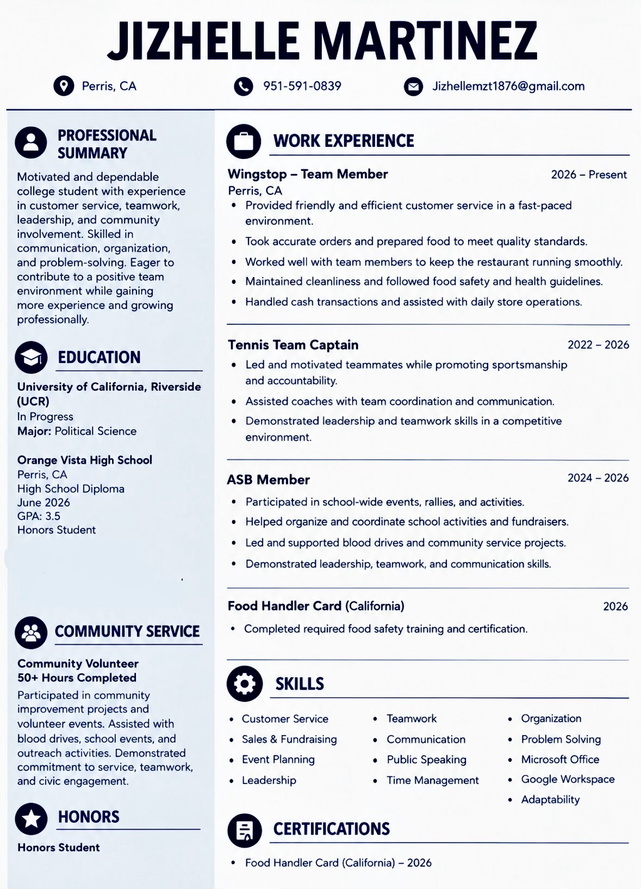
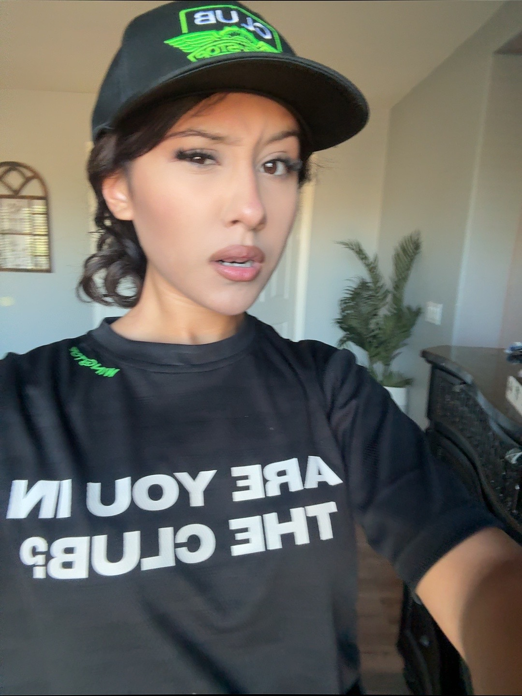
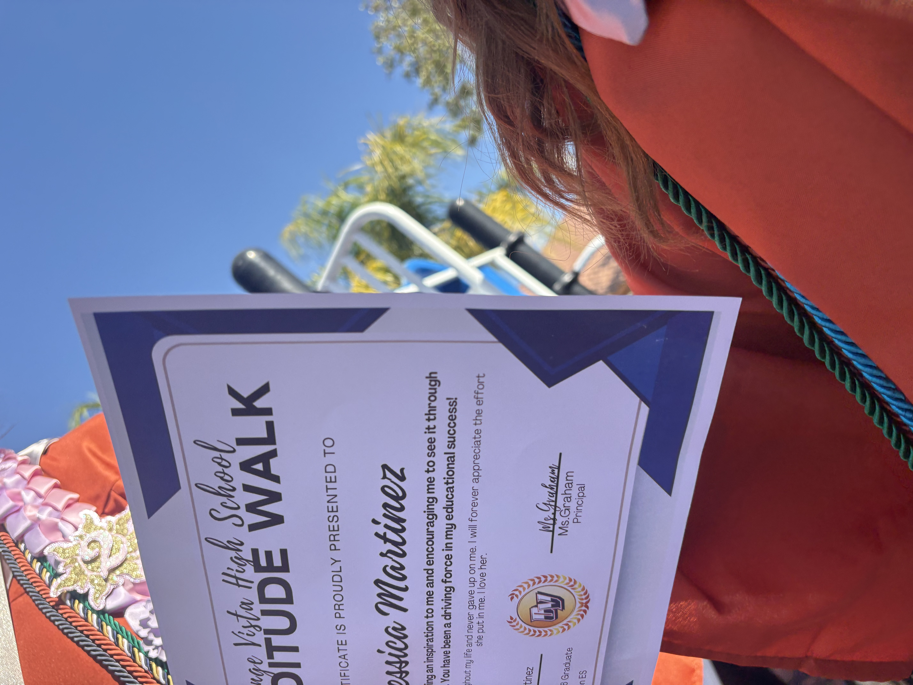

My name is Jizhelle I am a Political Science major. I am Planning on becoming a lawyer in the further future and attending NYU. I enjoy being active, playing guitar and listening to music. I am currently taking 4 classes that being 1. Computer science, 2. American Politics, 3. Introduction to Acting and lastly 4. Chass Learning. These will all contribute to my future and help me become the lawyer i want to be. One step closer to graduating.
Currently I am working at wingstop obtaining about 40 hours a wear while still being a full time student. Although it's very tiring working at nights it makes it worth it as im building my future and adding to my resume. Overall balancing my work life and my personal life is a little struggle i try my best to put myself out there and live my life to the fullest while still keping my priorities straight and strong.
In the past i've been invovled in my clubs regarding political science, debate, law and more. I believe this will all contribute to my future in a bright way and will make me more prepared as an attorney. I hope to join more clubs and socials to have a better understanding of law. As of now i will focus on school until i obtain a good opportunity for law. Being a full time college student has taught me that time management is important. I have to plan around my classes, assignments, and work schedule. Some days are more difficult than others, but I remind myself why I started and what I am working toward. I am learning that reaching my goals takes patience and consistency. Even when I feel tired, completing an assignment or making it to class feels like progress. At UCR, I want to take advantage of the opportunities around me. Since I am interested in law and politics, I want to learn more about how the government works, how laws affect people, and how different communities are represented.
Meeting people with different experiences can help me understand issues from more than one point of view. I also want to improve my public speaking and writing because those are skills I will need as an attorney. My acting class can help me become more confident speaking in front of others. Outside of school and work, I try to make time for things I enjoy. Playing guitar and listening to music help me take a break from my responsibilities. I also enjoy staying active because it gives me something positive to focus on. I think having interests outside of school is important. I want to make memories, meet new people, and experience new things while working toward my degree. I know becoming a lawyer will take effort, and I still have a lot to learn. I want to keep improving, gain experience, and stay open to opportunities. Attending NYU is a goal, but for now I will focus on school and work.


